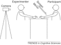
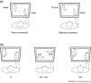

|
Copyright © 2002 Elsevier Science Ltd. All rights reserved. |
 Permissions & Reprints Permissions & Reprints |
Research update
Günther Knoblich
Available online 15 November 2002.
Abstract
How do I know it was me who moved? A recent experimental study illustrates the contribution of one's body schema and awareness of one's own actions to self-recognition. The results provide evidence that bodily cues and action cues are important in self-recognition, and they demonstrate that action cues overrule bodily cues.
Abstract
A recent study by Esther van den Bos and Marc Jeannerod demonstrates that bodily cues and action cues contribute to self-recognition and that the latter overrule the former.
Author Keywords: Self-recognition; alien hand; self-perception; body image; action awareness; distortions of self-recognition
Subject-index terms: Cognitive Science
Article Outline
How do we recognize ourselves? The first intuition is that self-recognition has something to do with recognizing our own face and other features that characterize us, as when we look in a mirror. Previous research has shown that our own face is indeed an important cue for self-recognition and that specific neural circuits are dedicated to its processing [1 and 2]. Mirror self-recognition has been considered a benchmark for self-recognition in general [3]. However, developmental and comparative studies suggest that this benchmark is not easily met: toddlers do not recognize themselves in the mirror before the age of 15 months [4] and, apart from humans, this ability has only been observed in great apes [5].
Self-recognition of body and action
There is good reason to believe that mirror self-recognition is only one particular aspect of self-recognition. Observing ourselves in mirrors is not representative of the way in which we normally perceive and recognize our body and our actions. Most of the time, we have only some parts of our body in our field of view; for example, our hands, forearms, belly, legs and feet. Moreover, we also continuously receive tactile and proprioceptive information about our body that is integrated with this visual information. The correlations between these different sources of information lead to the formation, from early childhood, of an inter-modal representation of our body often referred to as ‘body image’ [6]. It is likely that the body image plays an important role in self-recognition because it provides information about which parts of the visual input might belong to our own body, given a certain tactile and proprioceptive input.
An equally important aspect of self-recognition is related to the fact that some of our body parts frequently move. If we are lucky enough not to suffer from neurological syndromes like the anarchic hand [7], these movements follow our intentions. In order to assure that they do, we need to compare our intentions with the events that follow them [8 and 9]. For instance, when intending to move our index finger we would be very surprised to see our thumb move. Thus, anticipation of events accompanying or resulting from intended actions can also contribute to self-recognition because one can attribute the intended events to oneself [10, 11 and 12].
Alien hands
Until recently, only few empirical studies addressed self-recognition. One reason might be that it is very difficult to think of situations in which healthy adults fail to recognize themselves. However, in a recently published study, Esther van den Bos and Marc Jeannerod [13] successfully created an experimental setting that allowed them to assess the relative contributions of bodily and action cues to self-recognition. They used a modified version of the alien hand paradigm, originally developed by Elena Daprati and her colleagues [14] to investigate disorders of self-recognition in schizophrenic patients [15, 16 and 17].
The setting in van den Bos and Jeannerod's experiment was as follows (see Fig. 1). The participant and the experimenter sat at opposite sides of a table. Both wore gloves on their right hands to remove cues to identity. Each of them placed his or her right hand on the table so that the hands faced each other. The participant's hand was hidden below a screen mounted on the table and inclined by 45°. A mirror was attached to the back side of the screen so that it reflected both hands. A video camera filmed the mirror image that was displayed on the screen. For the participant, this created the impression of looking directly at the table on which the two hands were placed.
|  | Full-size image (3K) |
Fig. 1. Experimental set-up in van den Bos and Jeannerod's experiment [13]. The participant and the experimenter sit opposite each other and place their right hands on a table. The participant's hand is hidden below a screen. A video camera films the image reflected by a mirror attached to the back of the screen, and the image on the screen creates the impression for the participant of looking directly at the table.
Each trial began with the participant's and experimenter's hands held in a fist. While the screen was still switched off a signal indicated to the participant to move either the thumb or the index finger. The screen was then switched on and after another auditory signal the participant and the experimenter simultaneously initiated their movements. In a ‘same-movement’ condition, the experimenter moved the same finger as the participant, whereas in a ‘different-movement’ condition, the experimenter moved another finger (see Fig. 2a). After 1 second, the screen was switched off again and an arrow appeared pointing to the location on the screen where one of the two hands had been displayed. The participant's task was to judge whether the hand he or she had seen at this location was his or her own.
|  | Full-size image (14K) |
Fig. 2. Experimental conditions used by van den Bos and Jeannerod. (a) The experimenter simultaneously carried out either the same or a different movement from the participant. For instance, in the same-movement condition (left), both moved their index finger; in the different-movement condition (right) the experimenter moved the thumb when the participant moved the index finger. (b) In addition, the image displayed on the screen was rotated by 0°, 90°, −90°, or 180°. In the 0° degree condition, the orientation of the participants’ hand (P) was congruent with their body orientation. When the image was rotated by 90° or −90°, the orientation of both hands was incongruent. When the image was rotated by 180°, the orientation of the experimenter's hand (E) was congruent with the participant's body orientation.
In addition, the image on the screen was either rotated by 90°, −90°, 180°, or not rotated (see Fig. 2b). Image rotation was pre-programmed and did not create noticeable temporal delays. With no rotation, the spatial orientation of the participant's own hand was of course congruent with the orientation of her or his body. When the image was rotated by 90° or −90°, the orientation of the participant's as well as the experimenter's hand was incongruent with the participant's body orientation, that is, both hands were seen as ‘alien’. When the image was rotated by 180°, the experimenter's hand orientation was congruent with the participant's body orientation and the participant's hand orientation was congruent with the experimenter's body orientation. In other words, the experimenter's hand was seen as if it belonged to the participant's body and the participant's own hand was seen as if it belonged to the experimenter's body.
Using this set-up, van den Bos and Jeannerod first assessed the effect of action cues on self-recognition by comparing error rates in the different-movement (DM) and the same-movement (SM) conditions (chance level is at 50%). The participants almost always recognized their own hand in the DM condition (1% error rate). However, they had much more difficulty recognizing their own hand when the experimenter carried out the same movement (24% error rate in the SM condition). This result indicates that the participants used action cues because self-recognition became more difficult when fewer action cues were present.
In a next step, van den Bos and Jeannerod assessed the effects of bodily cues on self-recognition by comparing error rates for different rotations. In the DM condition, bodily cues did not affect the error rates. Thus, non-ambiguous action cues completely overruled bodily cues. However, in the SM condition (when action cues were therefore ambiguous) bodily cues affected the error rates. They were lowest (15%) when participants’ hand orientation was congruent with their body orientation (0° rotation), intermediate (24%) when the orientation of both hands was incongruent with body orientation (−90° and 90° rotation), and highest (35%) when the experimenter's hand orientation was congruent with the participants’ body orientation (180° rotation). The result that the error rate in the 180° condition was higher than in all other conditions clearly indicates that the body schema contributes to self-recognition, at least when non-ambiguous action cues are unavailable.
Future research
One question not fully answered by the experiment is which action cues allowed the participants to distinguish their own actions from those of the experimenter despite their carrying out the same movement. There are several potential differences between the two movements that might have been detected, including spatial deviations [18], differences in the temporal onset [19], or other differences in the movement kinematics [20]. Disentangling the contributions of different action cues to self-recognition would be well worth investgating in future research.
In conclusion, van den Bos and Jeannerod's study provides new evidence that helps to clarify the relative contributions of body schema and awareness of action to self-recognition. The results show that bodily cues are used when action cues are ambiguous. The technique they have developed could also be used to study distortions of self-recognition in different groups of neuropsychological and psychiatric patients. Such studies could help elucidate which specific neural systems underlie self-recognition.
Similar techniques could also be applied to address further aspects of self-recognition in healthy adults. In van den Bos and Jeannerod's study the movement itself was the action goal. In many situations, however, the action goal consists of manipulating objects, either directly or with the help of tools – for example, when hammering a nail. It is to be hoped that future studies will address the question of whether the same or different cues are used for these and other types of actions. Such studies could make an important contribution to the the scientific understanding and demystification of the self.
References
1. J.P. Keenan et al., Left hand advantage in a self-face recognition task. Neuropsychologia 37 (1999), pp. 1421–1425. Article |  PDF (136 K)
| View Record in Scopus | Cited By in Scopus (68)
PDF (136 K)
| View Record in Scopus | Cited By in Scopus (68)
2. T.T.J. Kircher et al., Recognizing one's own face. Cognition 78 (2001), pp. B1–B15. Article |  PDF (237 K)
| View Record in Scopus | Cited By in Scopus (110)
PDF (237 K)
| View Record in Scopus | Cited By in Scopus (110)
3. T. Suddendorf and A. Whiten , Mental evolution and development: Evidence for secondary representation in children, great apes, and other animals. Psychol. Bull. 127 (2001), pp. 629–650. Abstract | Full Text via CrossRef | View Record in Scopus | Cited By in Scopus (82)
4. L.E. Bahrick , Intermodal origins of self-perception. The self in infancy: theory and research. In: P. Rochat, Editor, Advances in Psychology, Elsevier (1995), pp. 349–373. Abstract |  PDF (1593 K)
| View Record in Scopus | Cited By in Scopus (2)
PDF (1593 K)
| View Record in Scopus | Cited By in Scopus (2)
5. G.G. Gallup , Chimpanzees: self-recognition. Science 167 (1970), pp. 86–87.
6. S. Gallagher , Philosophical conceptions of the self: implications for cognitive science. Trends Cogn. Sci. 4 (2000), pp. 14–21. Abstract |  PDF (302 K)
| View Record in Scopus | Cited By in Scopus (224)
PDF (302 K)
| View Record in Scopus | Cited By in Scopus (224)
7. Marchetti, C. and Della Sala, S. Disentangling the alien and anarchic hand. Cogn. Neuropsychiatry 3, 191–207.
8. M. Jeannerod , The 25th Bartlett Lecture. To act or not to act: perspectives on the representation of actions. Q. J. Exp. Psychol. 52A (1999), pp. 1–29. Full Text via CrossRef | View Record in Scopus | Cited By in Scopus (107)
9. W. Prinz , Perception and action planning. Eur. J. Cogn. Psychol. 9 (1997), pp. 129–154. Full Text via CrossRef | View Record in Scopus | Cited By in Scopus (396)
10. N. Georgieff and M. Jeannerod , Beyond consciousness of external reality: a ‘who-system’ for consciousness of action and self-consciousness. Conscious. Cogn. 7 (1998), pp. 465–477. Abstract |  PDF (69 K)
| View Record in Scopus | Cited By in Scopus (99)
PDF (69 K)
| View Record in Scopus | Cited By in Scopus (99)
11. S.J. Blakemore and J. Decety , From the perception of action to the understanding of intention. Nat. Rev. Neurosci. 2 (2001), pp. 561–567. View Record in Scopus | Cited By in Scopus (217)
12. G. Knoblich and R. Flach , Predicting the effects of actions: Interactions of perception and action. Psychol. Sci. 12 (2001), pp. 467–472. Full Text via CrossRef | View Record in Scopus | Cited By in Scopus (85)
13. E. van den Bos and M. Jeannerod , Sense of body and sense of action both contribute to self-recognition. Cognition 85 (2002), pp. 177–187. Article |  PDF (133 K)
| View Record in Scopus | Cited By in Scopus (77)
PDF (133 K)
| View Record in Scopus | Cited By in Scopus (77)
14. E. Daprati et al., Looking for the agent: An investigation into consciousness of action and self-consciousness in schizophrenic patients. Cognition 65 (1997), pp. 71–86. Article |  PDF (204 K)
| View Record in Scopus | Cited By in Scopus (188)
PDF (204 K)
| View Record in Scopus | Cited By in Scopus (188)
15. C.D. Frith et al., Abnormalities in the awareness and control of action. Philos. Trans. R. Soc. Lond. B 355 (2000), pp. 1771–1788. Full Text via CrossRef | View Record in Scopus | Cited By in Scopus (229)
16. N. Franck et al., Defective recognition of one's own actions in patients with schizophrenia. Am. J. Psychiatry 158 (2001), pp. 454–459. Full Text via CrossRef | View Record in Scopus | Cited By in Scopus (139)
17. C.D. Frith The Cognitive Neuropsychology of Schizophrenia, Erlbaum (1992).
18. P. Fourneret et al., Self-monitoring in schizophrenia revisited. NeuroReport 12 (2001), pp. 1203–1208. Full Text via CrossRef | View Record in Scopus | Cited By in Scopus (41)
19. S.J. Blakemore et al., Spatio-temporal prediction modulates the perception of self-produced stimuli. J. Cogn. Neurosci. 11 (1999), pp. 551–559. Full Text via CrossRef | View Record in Scopus | Cited By in Scopus (148)
20. G. Knoblich and W. Prinz , Recognition of self-generated actions from kinematic displays of drawing. J. Exp. Psychol. Hum. 27 (2001), pp. 456–465. Abstract | Full Text via CrossRef | View Record in Scopus | Cited By in Scopus (45)